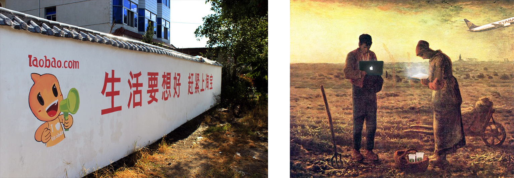
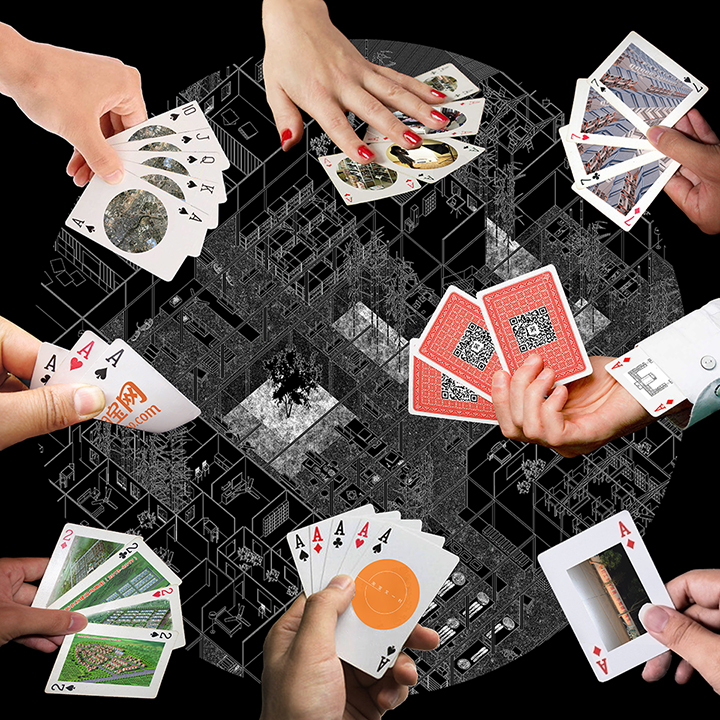
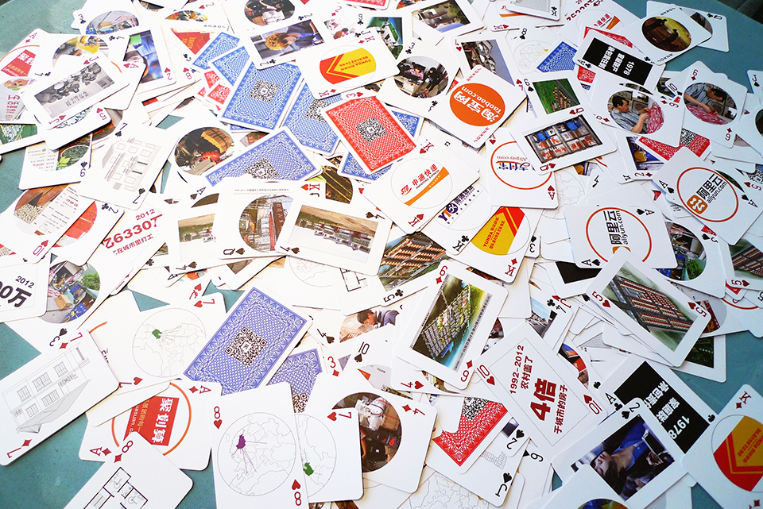

Another Taobao Village 1
showdown
shuffle
sort
reset
Design Challenge
This project was part of my thesis at Princeton, and it continued with the support and collaboration with Alibaba AliResearch after my graduation. The design presented here was to find an innovative way to demonstrate how e-commerce reshaped China's urbanization and rural development.
Main design challenges were:
1. The e-commerce explosion in rural China is a complex social phenomenon that involved many players and policies. The design needs to cover this complexity.
2. The topic to general public is unfamiliar and distant. The design needs to deliver simplicity and clearance.
3. The topic is beyond Alibaba and Taobao's growth and success in rural, it's about putting Alibaba and Taobao in a bigger social context. The design needs to address the big picture.
Taobao's Penetration in Countryside
A New Digital Countryside

One game, many players.
The project abandons the traditional way of visualizing Taobao's explosive growth within the industry, and chooses to situate it in a broader context: How can we understand Taobao's success along with the transformation of China? A game-setting design is imagined to present e-commerce players, Taobao growth numbers, key urbanization metrics, online platform, offline development and everything else all at once.

Taobao. Seller. Buyer. The Party.
Four players - Government, Alibaba, Taobao store owners, Consumers - are identified as the main participants of this game. All data, stories, policies, case studies and other intriguing things are merged into 108 pokers. The project uses this game-setting to re-envision Taobao's social impact: playing pokers always means wins and loses, Taobao.com is becoming a game without losers.
Hover and click on pokers and icons to explore.
Hover and click on pokers and icons to explore.
Click the left circle controllers to showdown and shuffle.


Taobao. Ruralism. Urbanization.
The two poker sets represent the power of Bottom-up from Internet disruption and the power of Top-Down from government administration, respectively. All 108 pokers are divided into 28 groups that are associated with key-words. Using the intrinsic structure of poker set itself and the content put into each poker, the design is to deliver a multi-perspective reading of Taobao's story.
Click the left circle controllers to sort pokers into key-wording groups.
Click the left circle controllers to sort pokers into key-wording groups.
2014 Taobao E-commerce Village Conference
The poker set design was printed into physical copies and handed out in 2014 Taobao E-commerce Village Conference in Hangzhou. 3000+ copies of poker sets were out of stock within the five hours after the conference opening.
